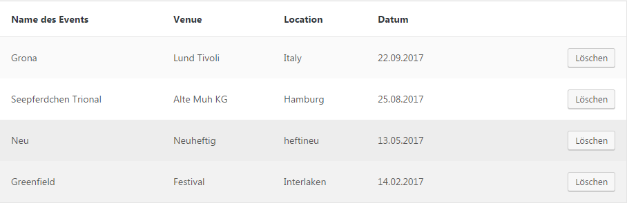

Created: 5/29/2017
By: Kjell Weibrecht
Email: kjell@simplefox.de
Thank you for purchasing my plugin. If you have any questions that are beyond the scope of this help file, please feel free to email via my user page contact form here. Thanks so much!
By installing and activating the plugin it creates a new admin menu "Simple Gig Listing". It contains 3 tabs each explained in the following:
Dashboard
The tab "Dashboard" lists all gigs you created. It has a paginated table view. All gigs past the actual date are shown with grey background.

It is possible to delete gigs here.
Add Gig
The tab "Add Gig" is selfexplaining. It contains the fields:
Settings
The tab "Settings" gives you some opportunities.
You can set the max amount of gigs shown in frontend, enable or disable the view of past gigs, switch between 2 frontend styles or choose between ascending and descending sorting.
I'm using one main CSS file in this plugin. It is located under "templates/basic/css/default.css". The file is separated into sections using:
/* * START general classes */ some code /* * END general classes */ /* * START widget classes */ some code /* * END widget classes */ etc, etc.
If you would like to edit a specific section of the plugin, simply find the appropriate label in the CSS file, and then scroll down until you find the appropriate style that needs to be edited.
This theme imports three Javascript files.
Once again, thank you so much for purchasing this plugin. As I said at the beginning, I'd be glad to help you if you have any questions relating to this plugin. No guarantees, but I'll do my best to assist.
Kjell Weibrecht